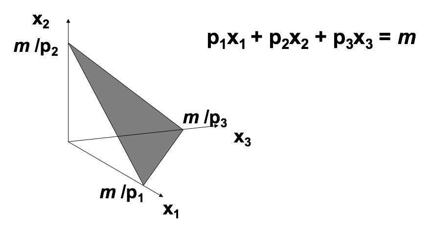
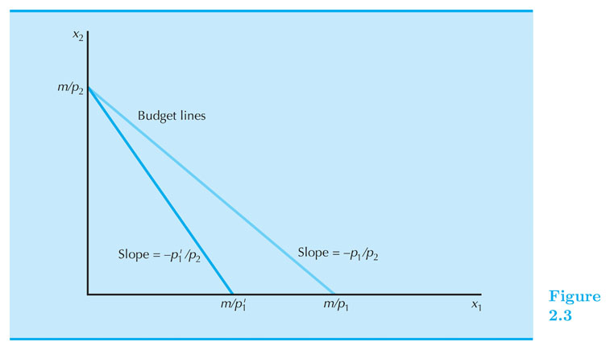
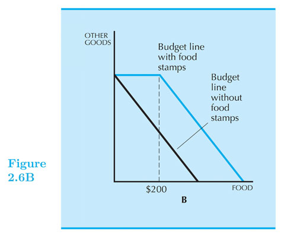

Budget Constraint
Intermediate Microeconomics (Econ 100A)
Kristian López Vargas
UCSC - Spring 2017
Consumption Choice Sets
-
A consumption choice set is the collection of all consumption choices available to the consumer.
-
What constrains consumption choice?
- Budgetary, time and other resource limitations.
Consumption bundle
-
A consumption bundle containing $ x_1 $ units of commodity 1, $ x_2 $ units of commodity 2 and so on up to $ x_n $ units of commodity n is denoted by the vector $ ( x_1, x_2, … , x_n ) $.
-
Prices or goods are denoted by: $ p_1, p_2, … , p_n $.
Affordable Bundles - Budget Constraints
-
Suppose prices are $ p_1, p_2, … , p_n $ and a consumer has $ m $ as income.
-
Question:
- When is a consumption bundle $ (x_1, … , x_n) $ affordable at those given prices and income?
Affordable Bundles - Budget Constraints
-
Answer:
-
when $ p_1 x_1 + … + p_n x_n \leq m $
-
where $ m $ is the consumer’s (disposable) income.
-
-
That is, all the bundles that when purchased do not exhaust the consumer's income.
"Budget line" or "budget constraint"
-
The bundles that are only just affordable form the consumer’s budget constraint or budget line.
-
This is the set:
$ \{ ( x_1 ,…, x_n ) \quad:\quad p_1 x_1 + … + p_n x_n = m \} $
- For simplicity we will only work with $ x_1, … , x_n $ are all equal or greater than zero.
Budget Set
- The consumer’s budget set is the set of all affordable bundles;
$ B(p_1, … , p_n, m) = \{ (x_1, … , x_n) \quad:\quad p_1 x_1 + … + p_n x_n \leq m \} $
- The budget constraint (or budget line) is the upper boundary of the budget set.
Budget for Two Commodities
- $ p_1 x_1 + p_2 x_2 = m $. Affordable set, intercepts, slope.

Budget for Three Commodities

Finding the slope of the BC
-
Budget line: $ p_1 x_1 + p_2 x_2 = m $
-
Solve for $ x_2 $ :
-
$ p_2 x_2 = m - p_1 x_1 $
-
$ x_2 = \frac{m}{p_2} - \frac{p_1}{p_2} x_1 $
-
-
Therefore the slope is: $ - \frac{p_1}{p_2} $
-
What is the interpretation: relative price.
Example of BC
-
Good one is beer (good 1) and orange juice (good 2).
-
Suppose $ p_1 = 3 $ and $ p_2 = 1 $.
-
Income = 100
-
slope = - 3: Consumer need to give up (buy less) 3 oz. of orange juice to afford (be able to buy) 1 additional oz of beer.
-
You can use the market to transform three units of OJ into one unit of beer, at the current prices. Therefore the term of relative price
Changes in the BC
-
The budget constraint and budget set depend upon prices and income. What happens as prices or income change?
-
Income change?
-
Prices change?
-
Board - Doc Camera
-
Makler's EconGraphs
Introducing EconGraphs
Income Changes

- What bundles become unaffordable or newly affordable?
Income Increases
-
Increases in income m shift the constraint outward in a parallel manner, thereby enlarging the budget set and improving choice.
-
Decreases in income m shift the constraint inward in a parallel manner, thereby shrinking the budget set and reducing choice.
-
Which one is "good" for consumer?
Price Changes

- What bundles become unaffordable or newly affordable?
$ p_1 $ increases
-
$ p_1 $ increases from $ p_1 $ to $ p_1' $
-
Budget constraint pivots: slope get steeper from $ -p_1 / p_2 $ to $ -p_1'/p_2 $
-
Increasing the price of one commodity pivots the constraint inward.
-
Some old choices are lost, so increasing one price could make the consumer worse off.
Ad Valorem Sales Taxes
-
An ad valorem sales tax levied at a rate of 5% increases all prices by 5%, from $ p $ to $ 1.05 p $ .
-
An ad valorem sales tax levied at a rate of t increases all prices by tp from p to (1+t)p.
-
BC under a uniform sales tax: $ (1+t) p_1 x_1 + (1+t) p_2 x_2 = m $
-
Do the graph!
Exercise: In kind gifts
-
Consumer receives $ g_1 $ units of good one as a gift.
-
Case 1: you can sell (trade) the gift if you want to.
-
Case 2: you cannot sell the gift.
-
Draw the budget line.
Exercise: The Food Stamp Program
-
Coupons that can be exchanged only for food.
-
How does a food stamp alter a family’s budget constraint?
-
Suppose $ m = {$}400 $ , $ p_F = {$}1 $ and the price of “other goods” is $ p_G = {$}1 $.
-
The budget constraint is then $ F + G = 400 $
-
Draw the budget line.
The Food Stamp Program

The Food Stamp Program
- What if food stamps can be traded on a black market for $0.50 each?
Other important cases
-
What if both, prices and income, double?
-
What if there are bulk discounts for units beyond a threshold?
-
What if there are quantity penalties for units beyond a threshold?